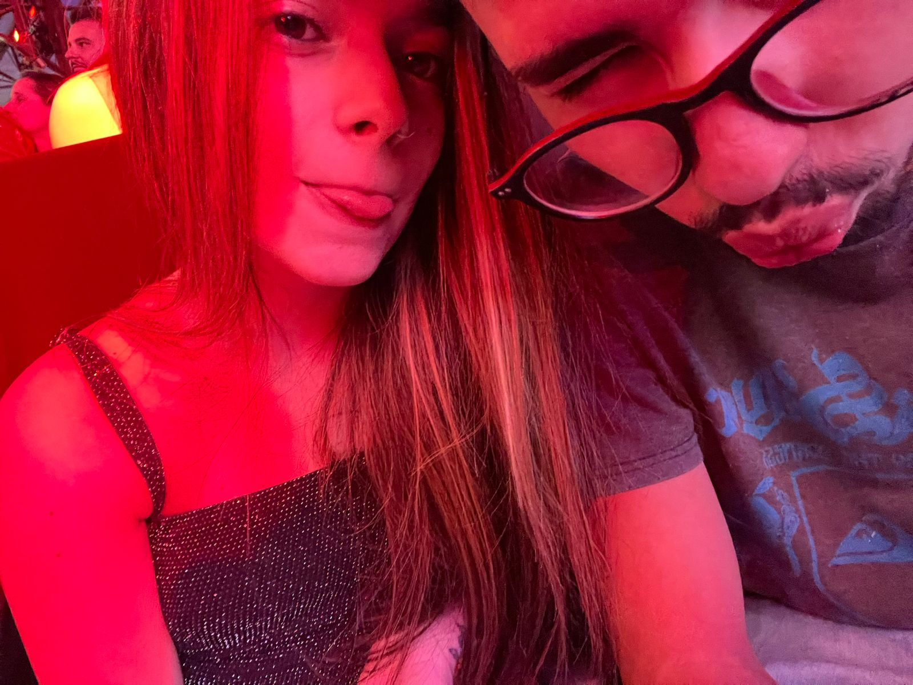
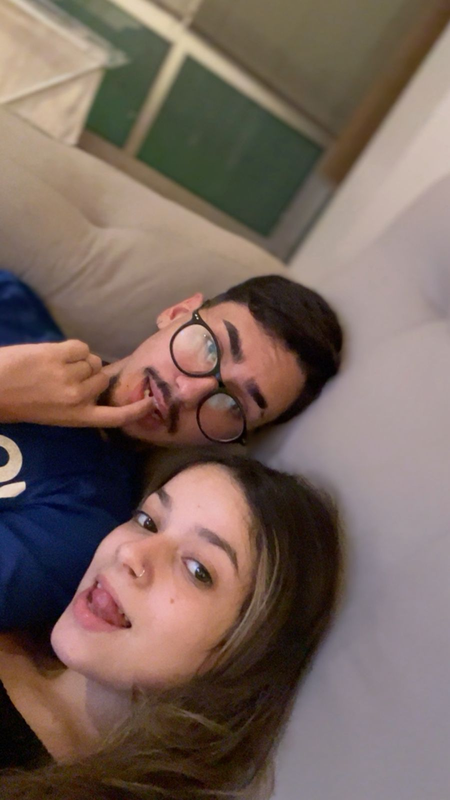
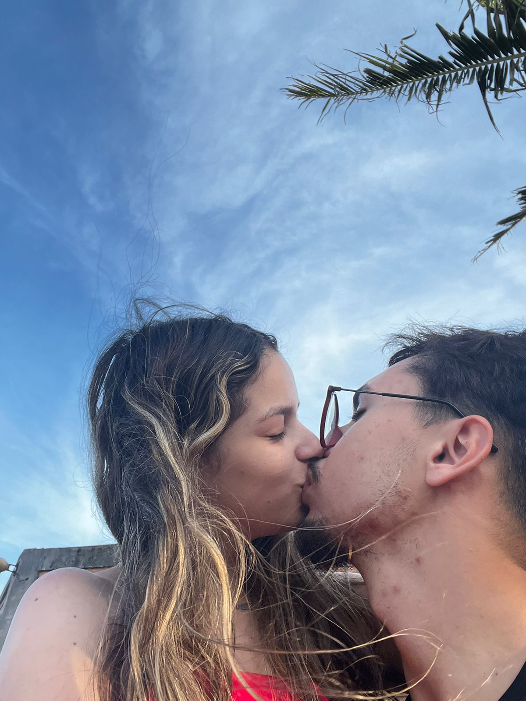
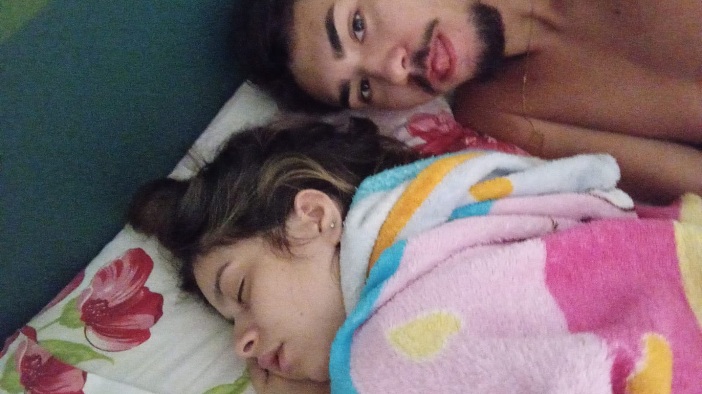
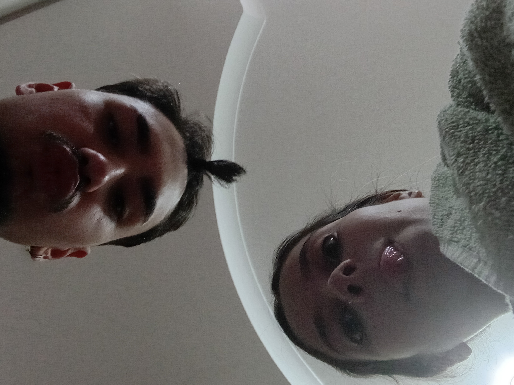
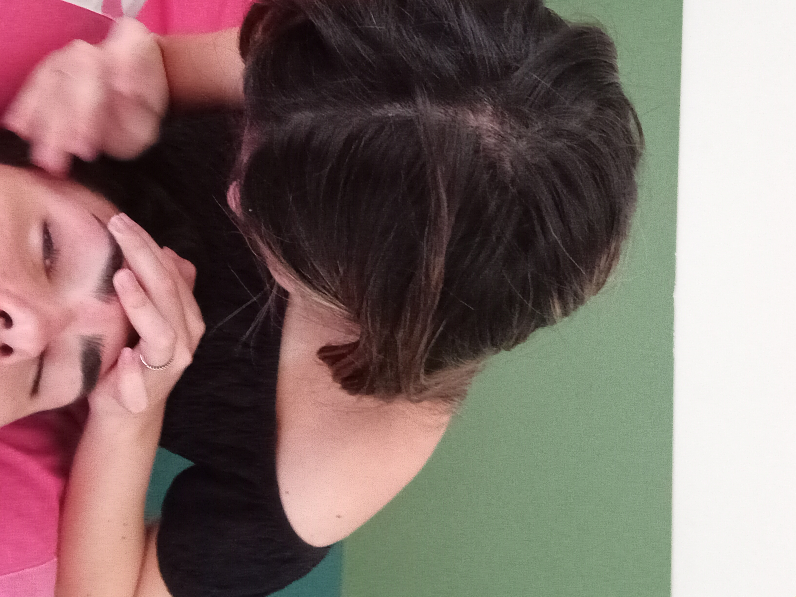
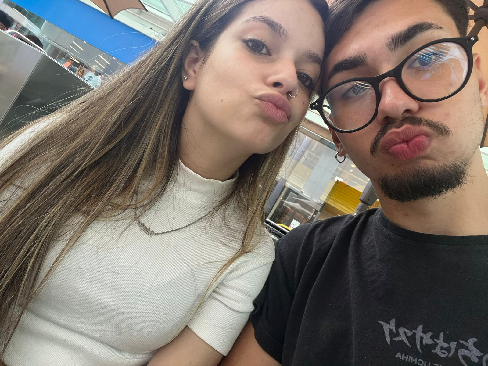
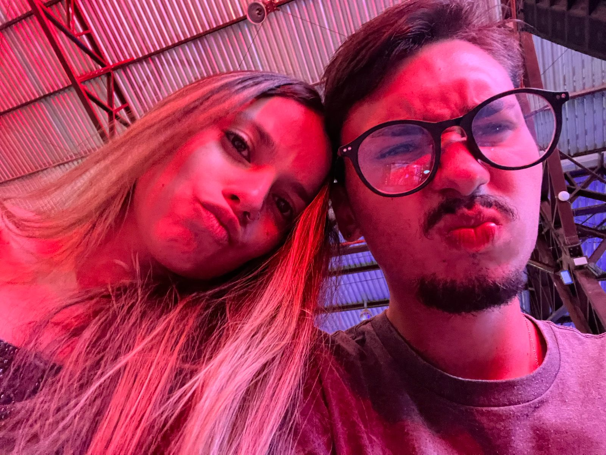

eu conheci ela num churrasco com amigos eu estava bêbado e só conseguia reparar nela... depois de uma semana fui em uma festa onde ela estava lá e desde então não consegui tirar os olhos dela,


começamos a conversar praticamente no aniversário dela 21/07/2025, a partir desse data conversamos todos os dias de manhã bem cedo até as madrugadas. tivemos as brigas de qual musica era melhor nas notas e obviamente eu ganhei todas.
ainda me lembro do nosso primeiro selinho na casa do zaltron no intervalo do jogo do cruzeiro (desde o começo o cruzeiro te incomoda) e do beijo de verdade no carro quando te deixei em casa e posso afirmar com todas as palavras foi o dia mais feliz da minha vida.
Depois disso ficamos uns dias sem nos ver até que o zaltron me pediu ajuda pra ele ir ver a ana luiza e eu aproveitei pra te ver, e daí fui na tua casa a primeira vez e assistimos YOU (série que nunca tinha visto antes).


Depois desse dia nos afastamos um pouco, acabamos ficando com outras pessoas mas tu nunca saiu da minha cabeça... até chegar setembro/outubro quando começamos a sair pra jogar sinuca com o paulo e o dinho,
até hoje me ardo de raiva quando lembro daqueles urubus em cima de ti tentando ficar contigo (principalmente do guilherme, gabriel e braian esses tão numa lista negra),
FINALMENTE em dezembro começamos a ter algo um pouco mais sério, te levei com minha família para coisas de natal em galópolis, depois dali não nos separamos mais.


Ainda me recordo da alegria que foi quando tu chegou na praia pra gente passar o réveillon juntos, ali ainda tinha minhas dúvidas se tu iria querer namorar comigo até que quando voltamos para caxias tu me apresentou para tua família.
E nunca poderemos esquecer da nossa fantástica música "fecha a janela vai cair água minha mulher assumiu que tava errada".


Hoje vou pedir ela em namoro, espero que dê tudo certo. Queria ter comprado as flores que ela me disse que gosta mas não consegui achar e não quero demorar mais pra fazer o pedido. UM BUQUÊ DE LÍRIOS especificamente ROSA estou te devendo ainda assim como tu ficou me devendo a lasanha kkk e falando da lasanha me lembro da tua (palida e arroz duro KKK) .
Amo fazer tu passar vergonha comigo, gritar na rua, dançar ALO VIRGINIA, entre outras coisas que te deixam com raiva de mim.
CONTINUAR ESCREVENDO ATÉ PEDIR ELA EM NOIVADO...